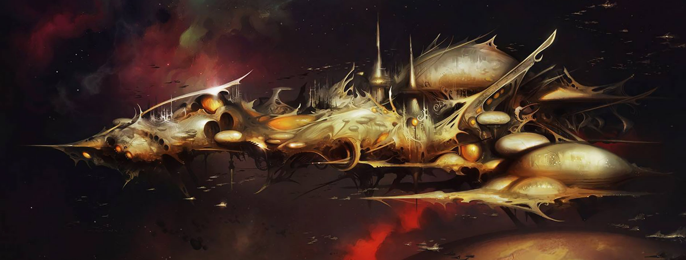

AELDARI
Dossier d’origine
Bien avant que l’Humanité ne lève les yeux vers les étoiles, avant même que Terra ne se couvre de ses premières ruines, les Aeldari régnaient déjà sur une grande part de la galaxie.
Leur empire ne ressemblait à rien que l’esprit humain puisse admirer sans malaise. Il ne reposait pas seulement sur la puissance militaire ou sur le nombre, mais sur une maîtrise presque totale de la matière, de l’énergie et du psychisme. Là où l’Imperium bâtit dans la suie, le sang et la prière, les Aeldari façonnaient des merveilles avec une aisance insupportable.
Leurs cités s’étendaient comme des songes figés. Leurs vaisseaux glissaient dans le vide comme s’ils n’avaient jamais eu à craindre la guerre. Leur technologie défiait la compréhension, et leurs esprits, plus vifs et plus sensibles que ceux des hommes, leur ouvraient des voies interdites entre pensée, art et destruction.
Mais aucune grandeur ne demeure intacte dans une galaxie vouée à la corruption.
Avec le temps, l’empire aeldari cessa de lutter pour sa survie. Puis il cessa de lutter tout court. Rien ne semblait pouvoir l’ébranler. Aucune menace ne paraissait digne d’être crainte. Leur puissance devint habitude. Leur sécurité devint mollesse. Leur raffinement devint vice.
Peu à peu, leurs mondes sombrèrent dans l’excès. Le plaisir remplaça le devoir. La sensation devint une fin en soi. Les limites furent moquées, puis piétinées, puis abolies. Là où une civilisation saine aurait vu le danger, les Aeldari virent une nouvelle forme d’ivresse.
Leurs cultes se firent plus obscurs. Leurs fêtes plus cruelles. Leurs jeux plus sanglants. Ce qui avait commencé comme une décadence devint une chute consciente, presque enthousiaste, vers quelque chose de plus vaste et de plus hideux.

Car les Aeldari n’étaient pas seulement une espèce ancienne. Ils étaient une espèce psychique. Leurs pensées, leurs pulsions, leurs perversions et leurs extases ne mouraient pas avec eux. Elles se déversaient dans l’Immaterium, nourrissant lentement une présence grandissante dans les profondeurs du Warp.
Durant des siècles, peut-être des millénaires, ils façonnèrent eux-mêmes le monstre qui allait les dévorer.
Puis vint la Chute.
L’instant exact échappe aux archives humaines, mais ses conséquences demeurent gravées dans la chair de la galaxie. La naissance de Slaanesh déchira la réalité. Un cri psychique d’une violence inimaginable balaya les étoiles. Des mondes entiers furent vidés en un souffle. Des populations innombrables furent anéanties, leurs âmes englouties dans l’instant même de leur agonie.
Le cœur de l’ancien empire aeldari fut arraché au réel et englouti dans ce qui devint l’Œil de la Terreur. Là où s’étendaient jadis des royaumes de lumière ne demeurèrent plus que tempêtes warp, mondes damnés et ruines souillées.
Ceux qui survécurent ne le durent ni à l’honneur ni à la force, mais à l’éloignement, à la prudence ou à la fuite.
Les futurs habitants des Craftworlds avaient quitté les centres de la débauche avant la catastrophe. Leurs vastes vaisseaux-mondes devinrent les cercueils glorieux de ce qu’il restait de leur race. Ils choisirent la discipline, la Voie, l’enfermement, tout ce qui pourrait empêcher leur espèce de replonger dans l’abîme qu’elle avait elle-même ouvert.
D’autres survivants prirent un chemin plus sombre encore. Ceux qui allaient devenir les Drukhari ne renoncèrent pas à la cruauté. Ils la raffinèrent. Ils se retranchèrent dans Commorragh et apprirent à survivre en faisant de la souffrance d’autrui un rempart contre leur propre damnation.
Entre ces deux extrêmes se déplacent les Harlequins, silhouettes rieuses et meurtrières, gardiens de récits si anciens qu’ils touchent presque au mythe. Eux aussi sont les enfants d’un monde mort, mais leur rôle semble appartenir à une logique qui échappe à toute lecture humaine stable.
Ainsi, les Aeldari modernes ne forment pas un peuple uni. Ils sont les fragments d’un cadavre impérial, des éclats survivants d’une civilisation qui se croyait éternelle et qui a fini par enfanter sa propre sentence.
Voilà l’origine véritable des Aeldari. Non une naissance glorieuse, mais une grandeur décomposée. Non un héritage admirable, mais l’histoire d’un peuple si puissant qu’il lui fallut inventer son propre bourreau pour connaître enfin la peur.
Fin de l’extrait. Toute étude complémentaire sur la Chute aeldari demeure soumise à autorisation préalable.